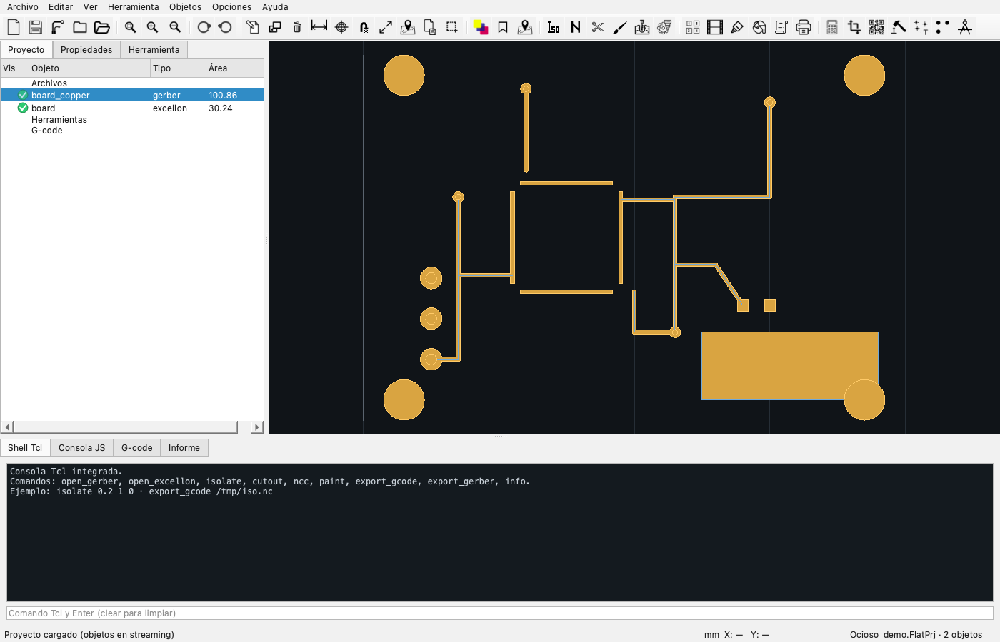

Proyecto
Objetos, grupos, guardado y configuración
El proyecto reúne objetos, tablas de herramientas, scripts y programas G-code en un solo archivo .FlatPrj.

Crear y abrir
| Acción | Cómo |
|---|---|
| Nuevo proyecto | Archivo → Nuevo proyecto. Vacía objetos y tablas, sin borrar archivos del disco. |
| Abrir archivos | Archivo → Abrir, selección múltiple o arrastrar a la ventana. |
| Abrir proyecto | Archivo → Abrir proyecto. Reconstruye objetos, textos y tablas. |
| Guardar | Archivo → Guardar proyecto (si ya tiene ruta) o Guardar como. |
| Abrir objeto de proyecto | Archivo → Abrir objeto de proyecto: carga sólo un objeto de un proyecto grande. |
Formato .FlatPrj
Es un JSON con la estructura de FlatCAM: lista de objetos, tipo, unidades, geometría en WKT y opciones. Puede estar comprimido con lzma; la app lo detecta y lo lee en streaming.
- Proyectos normales: se cargan completos.
- Proyectos enormes: la app lista metadatos y carga geometría por objeto para no agotar la memoria.
- Límite: la carga completa se limita a 512 MiB de JSON descomprimido; para más, usar Abrir objeto.
Árbol de objetos
Los objetos se agrupan automáticamente:
| Grupo | Contenido |
|---|---|
| Archivos | Gerber, Excellon y geometría importada. |
| Herramientas | Capas generadas: aislamiento, NCC, corte, pintura, fresado, fiduciales, thieving, film, doble faz. |
| G-code | Programas CNCJob generados. |
Ocultar un archivo oculta también las capas generadas a partir de él. El orden del árbol define el orden de dibujo: la fila superior se dibuja encima.
Visibilidad y selección
- La columna Vis tiene un icono verde (visible) o gris (oculto).
- Un clic en Vis alterna la visibilidad sin cambiar la selección.
- Un clic en el nombre selecciona el objeto y actualiza Propiedades y la herramienta.
- Doble clic abre la pestaña Herramienta del objeto.
- Supr elimina el objeto seleccionado; se puede deshacer.
- Ctrl+D duplica.
Propiedades del objeto
El panel Propiedades muestra y permite editar:
- Nombre.
- Tipo y área.
- Visibilidad.
- Rango X/Y, ancho y alto en la unidad activa.
- Unidades del archivo original.
- Detalles del formato: aperturas, flashes, segmentos, regiones, sólidos, recorridos, taladros, ranuras y herramientas.
- Propiedades personalizadas del proyecto (clave/valor).
Texto y scripts
Los objetos Document, Script y CNCJob guardan texto. Se editan desde el árbol o desde el editor de texto y se conservan al guardar el proyecto. Los scripts de proyecto se pueden ejecutar desde el editor.
Archivos recientes y marcadores
- Archivo → Recientes muestra los últimos archivos y proyectos.
- Ver → Marcadores guarda posiciones de vista con nombre.
- El gestor de marcadores permite crear, saltar y eliminar.
Configuración y respaldo
- Archivo → Guardar configuración: exporta las preferencias a JSON.
- Archivo → Abrir configuración: las restaura.
- Archivo → Backup del proyecto: copia el
.FlatPrjactual con fecha. - Preferencias → Archivos: carpeta de backup, recientes y comportamiento al abrir.
Base de datos de herramientas
Es un archivo SQLite con herramientas reutilizables: nombre, diámetro, avances, RPM, potencia láser, Z de corte y profundidad. Desde la tabla de una herramienta, el botón Desde DB agrega una fila. La base se puede editar desde Herramienta → Base de datos.
Qué se guarda en el proyecto
| Elemento | Se guarda |
|---|---|
| Geometría de objetos | Sí, en WKT. |
| Tablas de aislamiento/NCC/corte/pintura/taladrado | Sí, en project_options. |
| Propiedades por objeto | Sí, JSON. |
| Texto de Document/Script/CNCJob | Sí. |
| Archivo fuente | Sí, ruta para reeditarlo. |
| Preferencias globales | No; van en QSettings. |
El proyecto no guarda los archivos Gerber/Excellon originales, sólo su geometría y la ruta. Si movés los originales, el editor de fuente no los encontrará, pero la geometría sigue en el proyecto.